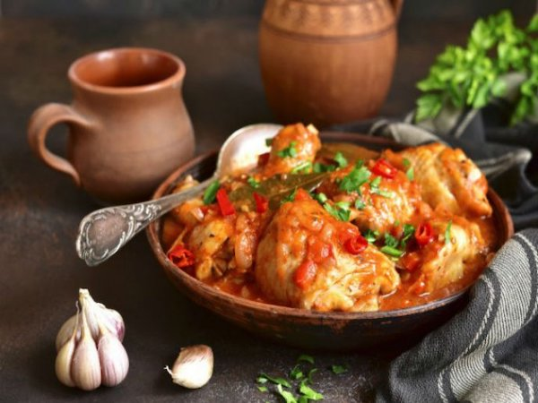

San Marcos Chicken
Description
Named after the San Marcos Fair, one of the oldest fairs in the country that dates back to 1828, this dish's preparation is based on fruits found in the region, which infuse the chicken meat with delicious, sweet and sour flavors.
Ingredients
- 4 chicken breasts
- 2 cups breadcrumbs
- 2 cups parmesan cheese
- 1 cup chopped fresh basil
- 1 tablespoon butter
- 1 quart heavy cream
- 10 garlic cloves, chopped
- 2 cups flour
- 6 eggs, beaten
- salt & pepper
Steps
- Mix together basil, parmesan and breadcrumbs, set aside.
- Pound out chicken breasts, coat with flour, dip in egg wash and then coat with parmesan mix.
- In a skillet on med heat, add a little oil and saute chicken until golden brown on both sides.
- To make sauce, saute the garlic in the butter on med heat for 1 min ( do not brown).
- Then add the heavy cream and reduce until thickens, add salt and pepper.